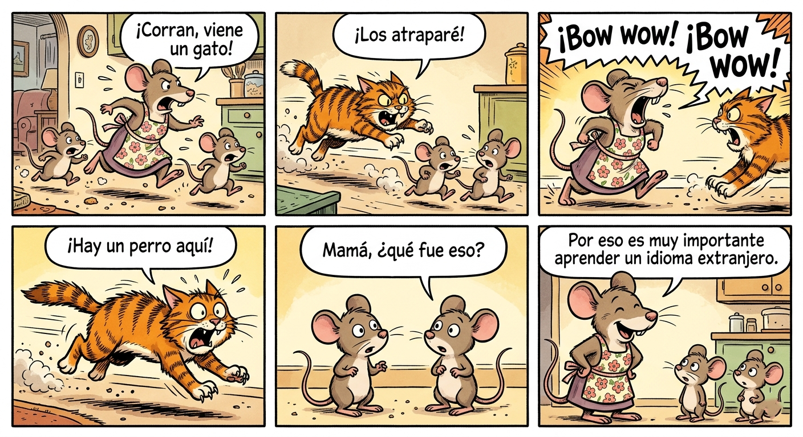
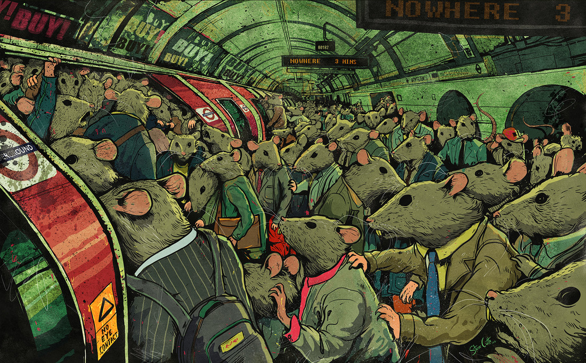
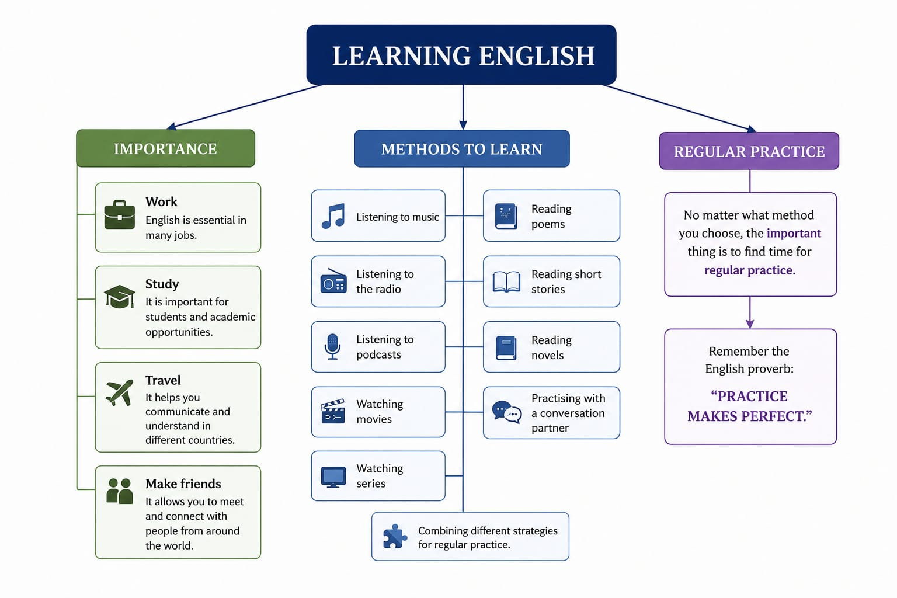

| Alumno / a | : | Andrada Juan Pablo |
| Docente | : | Marchisio, Pablo |
| Comisión | : | Virtual |
| Asignatura | : | Inglés Técnico I |
| Año / Cuatrimestre | : | 1º Año – Primer Cuatrimestre |
| Fecha de entrega | : | 31/07/2026 |
| Habilidad | ¿Qué puedo hacer para mejorarla? |
|---|---|
| LISTENING (Comprensión auditiva) |
Escuchar canciones en inglés, ver películas y series con subtítulos en inglés, oír podcasts y mirar videos en YouTube para acostumbrarme a diferentes acentos. |
| SPEAKING (Expresión oral) |
Practicar conversaciones en inglés todos los días, leer en voz alta, grabarme hablando y participar en intercambios de idiomas o clases de conversación. |
| READING (Lectura) |
Leer cuentos, noticias, artículos y libros sencillos en inglés, subrayar palabras nuevas e intentar comprender el contexto sin traducir todo. |
| WRITING (Escritura) |
Escribir pequeños textos, diarios personales, correos electrónicos o mensajes en inglés y pedir correcciones cuando sea posible. |
| GRAMMAR (Gramática) |
Estudiar las reglas gramaticales, realizar ejercicios prácticos y repasar los tiempos verbales y las estructuras más utilizadas. |
| VOCABULARY (Vocabulario) |
Aprender palabras nuevas cada día, usar tarjetas de memoria (flashcards), anotar expresiones útiles y practicar su uso en oraciones. |
| PRONUNCIATION (Pronunciación) |
Escuchar hablantes nativos, imitar su forma de hablar, repetir palabras y frases en voz alta y practicar la entonación y el ritmo del idioma. |
Reading text
Three mice were running around the house: Mother mouse and her two kids. Suddenly, a cat appeared and started running after them. They were really scared until Mother Mouse turned around and looking at the cat in the eyes, she started barking: "bow wow!" on top of her voice. The cat was terrified and ran away fast.
"What was that mum?" One of the little mice asked.
"That's why it's very important to learn a foreign language, my dear children!", the mother said.
a) Pre-reading tasks
1) Read the title and pay attention to the pictures. What do you think the story is about?
(Lee el título y presta atención a las imágenes. ¿De qué te parece que se trata el texto?)
Creo que la historia trata sobre una familia de ratones que intenta escapar de un gato y utiliza la inteligencia y el conocimiento de otro idioma para salvarse.
2) Look for the following words in a dictionary.
(Busca el significado de las siguientes palabras y escríbelo en español)
| Palabra en inglés | Significado en español | Categoría gramatical (sustantivo / verbo / preposición / adjetivo) |
|---|---|---|
| Mice | Ratones | Sustantivo (plural de mouse) |
| Scared | Asustado(s) | Adjetivo |
| Run | Correr | Verbo |
| Turn around | Dar la vuelta / Girarse | Verbo |
| Mother | Madre | Sustantivo |
| Foreign | Extranjero | Adjetivo |
| Bow wow | Guau guau | Onomatopeya (sonido de un perro) |
| In | En / Dentro de | Preposición |
Clasificación:
• Sustantivos: mice, mother
• Verbos: run, turn around
• Preposición: in
• Adjetivos: scared, foreign
¿Cómo reconocerlas?
¿Cómo podemos reconocer la función o categorías gramaticales de estas palabras?
Podemos reconocerlas observando su función en la oración: los sustantivos son los sujetos u objetos, los verbos indican lo que hace el sujeto, los adjetivos acompañan a los sustantivos y las preposiciones conectan palabras mostrando relaciones espaciales o temporales.
b) While reading activities
3) Read the text and underline the words you don't know. Find out about the meaning of these words.
(Lee el texto y subraya las palabras que no conozcas. Averigua el significado de estas palabras)
Palabras desconocidas y significado:
• Appeared: apareció
• Started: comenzó
• Terrified: aterrorizado
• Ran away: huyó / salió corriendo
• Asked: preguntó
• Learn: aprender
• Dear: querido/a
• Children: niños / hijos
4) Can you retell the joke in your own words (in Spanish if you want)?
(¿Puedes contar el chiste en tus propias palabras?)
Una mamá ratón y sus dos hijos estaban siendo perseguidos por un gato. Para ahuyentarlo, la mamá empezó a ladrar como un perro. El gato creyó que había un perro cerca y escapó. Luego la mamá les explicó a sus hijos que aprender un idioma extranjero puede ser muy útil.
5) What is the message of the story?
(¿Cuál es el mensaje del relato?)
El mensaje es que aprender idiomas extranjeros puede ser muy útil y ayudarnos en diferentes situaciones de la vida.
6) Can you find the following items in the text?
(Encuentra los siguientes ítems en el texto)
| Ítem | Respuesta |
|---|---|
| The names of two animals | mouse (mice), cat |
| Words associated with family | mother, kids, children, mum |
| An irregular plural | mice |
| An irregular verb in the simple past | were, ran, turned (cualquiera) |
| A regular verb in the simple past | started, asked, appeared |
| A feeling or emotion | scared, terrified |
| A place | the house |
7) True or false. Correct the false statements.
(Verdadero o falso. Corregir las oraciones incorrectas)
| Oración | V / F | Corrección |
|---|---|---|
| This story is about a dog that wants to attack a cat and its babies. | F | La historia trata sobre una familia de ratones perseguida por un gato. |
| The baby mice were really happy when they saw the cat. | F | Los pequeños ratones estaban muy asustados cuando vieron al gato. |
| The mother uses the language of dogs to scare the cat away. | V | — |
| Mother mouse uses this experience to teach her children a lesson. | V | — |
After reading activity
8) Now it is time to use your imagination. Create a comic strip telling the story you have just read. You can use a digital tool to do it. Add this activity to your portfolio.

1. ¿Cómo le resultó la lectura de este texto de nivel básico?
La lectura me resultó bastante sencilla de comprender. Al tratarse de mensajes cortos y usar vocabulario cotidiano, pude seguir la idea principal sin muchas dificultades.
2. ¿Tuvo alguna dificultad con las distintas actividades?
Tuve algunas dudas con ciertas expresiones y tiempos verbales, pero el contexto de la conversación me ayudó a entender su significado.
3. ¿Encontró nuevas palabras que no conocía?
Sí, encontré algunas palabras y expresiones nuevas, aunque la mayoría eran fáciles de deducir por el contexto.
4. ¿Qué recurso o estrategia utilizó para su comprensión?
Utilicé un diccionario en línea y también intenté inferir el significado de las palabras desconocidas a partir del contexto de la oración. Además, releí el texto varias veces para comprenderlo mejor.
1. The Blue Café is nice.
| Palabra | Categoría gramatical |
|---|---|
| The | Article (artículo) |
| Blue | Adjective (adjetivo) |
| Café | Noun (sustantivo) |
| is | Verb (verbo) |
| nice | Adjective (adjetivo) |
2. I love the tea there.
| Palabra | Categoría gramatical |
|---|---|
| I | Pronoun (pronombre) |
| love | Verb (verbo) |
| the | Article (artículo) |
| tea | Noun (sustantivo) |
| there | Adverb (adverbio) |
3. I'm working now, but I finish work at five.
| Palabra | Categoría gramatical |
|---|---|
| I | Pronoun (pronombre) |
| am | Verb (verbo auxiliar) |
| working | Verb (verbo principal) |
| now | Adverb (adverbio) |
| but | Conjunction (conjunción) |
| I | Pronoun (pronombre) |
| finish | Verb (verbo) |
| work | Noun (sustantivo) |
| at | Preposition (preposición) |
| five | Numeral (número) |
La siguiente canción refleja las distintas acciones realizadas por Mr. Morton. Los invitamos a escribir al menos cinco oraciones donde Mr. Morton es el sujeto.
Oraciones:
Mr. Morton walked down the street.
Mr. Morton met Pearl.
Mr. Morton gave Pearl a flower.
Mr. Morton asked Pearl to marry him.
Mr. Morton became very happy when Pearl said yes.
Decide if the following sentences are simple, complex or compound. Translate the sentences into Spanish.
| Nº | Oración en inglés | Tipo (Simple/Complex/Compound) |
Traducción al español |
|---|---|---|---|
| 1 | The dog and the cat are eating in the garden. | Simple | El perro y el gato están comiendo en el jardín. |
| 2 | Jennifer went to the office whereas John went home. | Compound | Jennifer fue a la oficina, mientras que John se fue a casa. |
| 3 | The house where I live is really beautiful and cozy. | Complex | La casa donde vivo es realmente hermosa y acogedora. |
| 4 | I didn't know that Henry was on holiday. | Complex | No sabía que Henry estaba de vacaciones. |
| 5 | Mary is my best friend but sometimes she is a bit jealous. | Compound | Mary es mi mejor amiga, pero a veces es un poco celosa. |
| 6 | My favourite teacher was Mrs. Thompson because she was very kind and funny. | Complex | Mi profesora favorita era la señora Thompson porque era muy amable y divertida. |
| 7 | Peter swam in the lake and went climbing. | Simple | Peter nadó en el lago y fue a escalar. |
Now read the following sample text and video containing personal information. Create a similar one about you. Make sure to make it as complete as possible.
Hello! My name is Juan Pablo Andrada. I am 19 years old and I was born on September 3, 2006, in Alta Gracia, Córdoba, Argentina.
I finished high school at Instituto Manuel de Falla in Alta Gracia in 2025, where I graduated as a Programming Technician. Since I was young, I have been interested in technology and computers.
I live with my family, and recently I welcomed a new baby sister, which has been a very special experience for me and my family.
In my free time, I enjoy sitting at my computer, thinking about new ideas, and learning more about programming and robotics. I like exploring how technology can be used to solve problems and create useful projects. I am always interested in learning new skills and improving my knowledge in this field.
I am currently studying at university to continue my education and develop my abilities for my future career in technology.

1. What can you see?
I can see a crowded subway station full of rats dressed like people.
2. What colours is the artist using? Why?
The artist is using dark green, grey, brown and red colours. To create a gloomy and depressing atmosphere.
3. What is in the foreground? And in the background?
There are rats wearing suits and carrying bags. There is a subway train, advertisements and signs that say "NOWHERE".
4. How are they feeling?
They seem tired, stressed and bored.
5. What is the predominant emotional reaction you get when you observe this image?
I feel concerned and uncomfortable.
6. Do you think the author had an intention or a message he wanted to convey? Is there something in our society he/she wants to criticize? What do you think?
Yes, I think he wanted to show the problems of modern society. Yes. I think he is criticizing consumerism, routine and the lack of individuality.
Lee la información en el siguiente enlace e identifica los siguientes elementos:
Un texto es un conjunto de frases ordenadas y con sentido que presentan coherencia y cohesión, permitiendo que el lector u oyente comprenda correctamente el mensaje. Puede transmitirse de forma oral o escrita y tener una extensión variable.
Los textos de cierta extensión suelen organizarse en tres partes:
Reading text
Nowadays, English is certainly the "lingua franca" or language for international communication. Millions of people around the world speak it as a first, second or foreign language. If you can use this language to communicate, you have more opportunities in today's world. You will probably need English in many situations: to work, to study, to travel and even to make friends. Many people say that English opens many doors and makes your life richer.
Now the question is this: if English is so necessary, what is the best method to study it? There is probably not a single method for everybody. Many people improve their English by listening to music, the radio or podcasts in internet. Others prefer watching movies and their favourite series in that language. For book lovers, the best way to learn new words is to read literature in English: poems, short stories and novels. When I was a teenager, my favourite technique was practising my English with a conversation partner. I learned a lot of expressions and gained fluency in this way. For most people perhaps, a combination of different strategies can be the best alternative. Anyway, no matter what method you choose, the important thing is to find time for regular practice. Remember the English proverb: "practice makes perfect".
By Paul
A. Read the title: What kind of information you are going to find in this article?
The article is about learning English and the different methods people can use to improve their English skills.
B. How many paragraphs can you see? What is the most important idea in each one of the paragraphs?
There are 3 paragraphs.
Paragraph 1: The importance of English in today's world.
Paragraph 2: Different methods to learn English.
Paragraph 3: The importance of regular practice and combining strategies.
C. Make a list of the methods that are mentioned here to study English.
D. What is your personal response to the text? Can you relate the text to your personal life?
Yes, I can relate the text to my personal life because English is important for programming and technology. Many websites, tutorials and computer programs are in English. Learning English helps me improve my skills and have more opportunities in the future.
E. Copy the document on your portfolio. Find and underline an example of each kind of word.
F. Create a mind-map showing the most important concepts in this text. Create an audio recording (in English or Spanish) explaining this mind map.

🎧 Audio explicación del mapa mental: